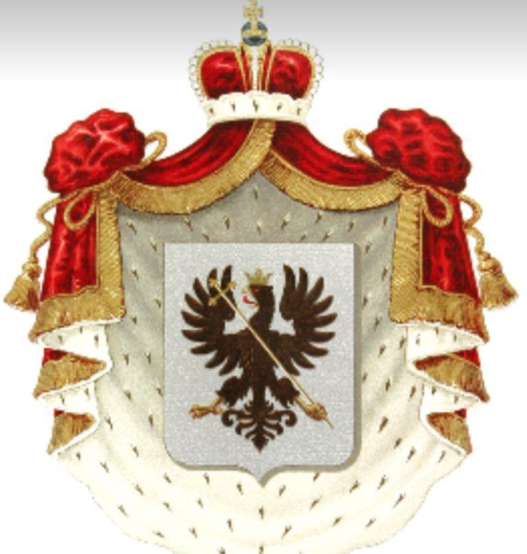
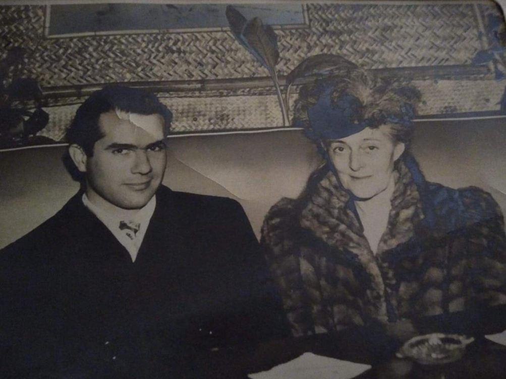
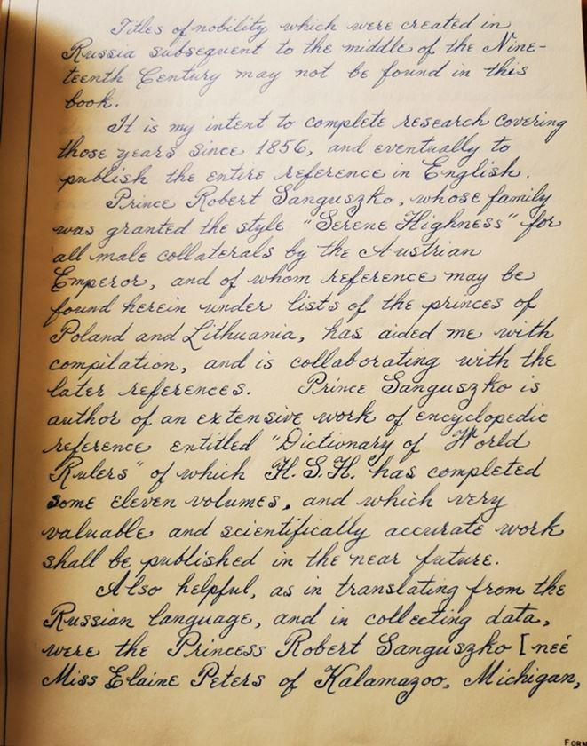
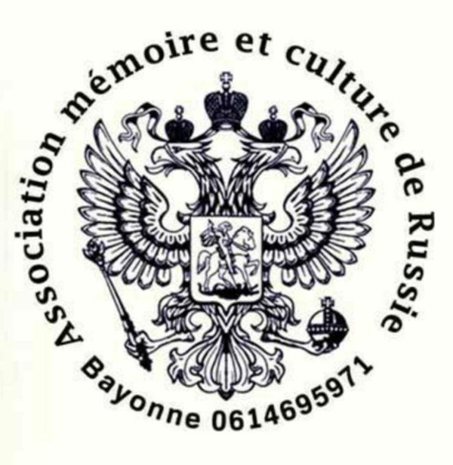

L'association Mémoire et culture de Russie est fière d'avoir retrouvé le fameux manuscrit perdu du prince Vladimir Elinsky. Ce nom évoque la grandeur d'un empire emporté par la tourmente d'une révolution et reste étroitement lié à l'un des assassinats les plus célèbres de l'Histoire russe.
Des palais de Saint-Pétersbourg à la mairie de Palm Beach, les Romanov-Ilyinsky sont assurément la branche la plus américaine, mais aussi la plus méconnue, de la Maison de Russie. Nous connaissions l'existence de ce manuscrit si précieux qui retraçait par époque et par ordre de famille tous les grands noms de l'aristocratie russe.
Ce document écrit en français, mise à part l'introduction qui se trouve être en anglais, de la main même du prince Vladimir Elinsky dans les années 50 avait été perdu. Nul ne savait où il pouvait bien se trouver.
Ce manuscrit contient une mine de renseignements indispensables à nos investigations, c'est donc avec foi et conviction que nous avons recherché dans le monde entier ce trésor, en suivant toutes les pistes que nous avions à notre disposition.
Finalement, nos recherches nous ont amenés aux États-Unis où l'illustre famille Elinsky s'était établie.
Nous nous sommes d'abord intéressés aux archives de ventes aux enchères, sans finalement trouver aucune piste, puis nous nous sommes orientés vers les collections privées et pour finir avons collecté toutes les revues de presse de 1901 à 1959.
Nous avons contacté un nombre incroyable de personnes qui pouvaient détenir quelques renseignements sur ce document. De semaine en semaine, et de fil en aiguille, le hasard frappa enfin à notre porte.
Nos recherches ayant fait grand bruit aux États-Unis d'Amérique nous avons finalement été contactés par un particulier qui, dans une multitude de revues de presse et de photos diverses, a découvert le fameux document. Il se trouvait être dans l'Ohio et nous avons pu ainsi nous en porter acquéreur.

Le Prince et sa mère Wanda
Inutile de vous expliquer notre joie et surtout notre impatience de le recevoir... Le jour du dénouement arriva enfin ! Après un si long voyage qui ne l'avait pas affecté, nous avons pu le découvrir et constater sa parfaite conservation nous permettant d'admirer la netteté et même la beauté de l'écriture du prince Elinsky. Le manuscrit était intact, il ne manquait aucun feuillet. L'association Mémoire et culture de Russie a alors décidé d’éditer ce manuscrit dans son intégralité car l'intérêt de ce document est tel, qu'il appartient à tout le monde.
Pour vous en donner un aperçu et pouvoir en apprécier la valeur, voici l'introduction que nous avons traduite de l'anglais au français, que nous communiquons en exclusivité pour la revue Méthode.
Préface et Reconnaissance
Cette note transcrite ci-après de ma main [durant une traversée à bord du vaisseau de la Naval U.S. depuis Ras Tanuka, au Royaume de Saudi en Arabie, jusqu’à Yokohama, dans l’Empire du Japon, au mois d’octobre 1954] est le résultat de références trouvées à Londres et à New-York.
La principale source de cette information est due au travail du prince Piotr Dolgorouki intitulée "Notice sur les Principales Familles de la Russie", imprimée à Berlin au cours de l’année 1859, par Ferdinand Schneider.

Copie d’une page du manuscrit
La copie de ce livre utilisée pour présenter des extraits de ce volume a été trouvée dans la collection de la Bibliothèque Astor de la Bibliothèque publique de New-York, qui avait été imprimé dans cette ville en langue française. C’est la raison pour laquelle le contenu de ce livre a été écrit en Français.
Un autre livre du dernier prince Piotr Dolgorouki, imprimé également il y a un siècle, mais dans la langue Russe, a été trouvé et acheté en raison de la valeur de sa référence dans une librairie de Londres, en Angleterre, en 1950.
On ne peut pas trouver dans ce livre les titres de noblesse qui furent créés en Russie après le milieu du XIXe siècle.
Mon intention est de compléter ma recherche pour couvrir ces années depuis 1856, et éventuellement de publier l’ensemble des références en Anglais.
La famille du prince Robert Sanguszko, à qui l’Empereur autrichien avait accordé le titre d’« Altesse Sérénissime » pour tous les colatéraux mâles et dont il est fait référence, peuvent se trouver inclus dans les listes des princes de Pologne et de Lituanie, ce qui m’a aidé à faire cette compilation et contribue aux dernières références. Le prince Sanguszko est l’auteur d’un travail important ayant pour but de réaliser une encyclopédie de référence dont le titre est : "Dictionnaire des Règles Mondiales", que H.S.H. a compilé en quelques onze volumes, et dont le travail remarquable, d’une précision scientifique, sera publié dans un futur proche.
Ce qui est très utile aussi, ce sont une traduction du Russe, et une collecte de données de la princesse Robert Sanguszko [née Miss Elaine Peters de Kalamagoo, Michigan et Los Angeles, Californie] et de ma propre mère bien-aimée, la princesse Wanda Riembiesca Elietskaya.
Suite aux assassinats de masse durant la terrible révolution en Russie après la I ère Guerre Mondiale, beaucoup de familles nobles répertoriées ici ont subi une tragique extinction.
Nous nous efforcerons d’inclure toutes les données, que nous pourrons vérifier aussi loin que possible pour de futurs travaux.
Fidèlement.
Vladimir,
Prince Elietsky
24 octobre 1954
Yokohama, Japon
N. S.-K.
POUR ADHÉRER À L’ASSOCIATION MÉMOIRE ET CULTURE DE RUSSIE :
Cette association a pour objet de préserver et de développer la mémoire et le patrimoine liés à l’histoire de l’importante communauté russe qui résidait ou s’était fixée à partir du XIXème siècle au Pays Basque et sur les terres béarnaise/gasconne environnantes ; en particulier le recensement, la préservation et l’entretien tant matériel que spirituel (panikhides) des tombes russes. Également la participation ou l’organisation d’événements concourant à ces objectifs : conférences, expositions, galas de charité, édition ou présentation de livres, enregistrements, documentaires et divers ainsi que toutes activités liées à la diffusion de la culture et de la spiritualité russes, etc.
Partager cette page